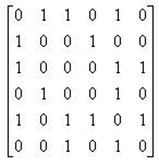

图：深度优先搜索（Depth-First Search, DFS）
一、DFS基本概念与模板
1. DFS简介
深度优先搜索（Depth-First Search, DFS）是一种图遍历算法，从一个顶点开始，沿着路径尽可能深入探索，直到无路可走时回溯。可以看作是树的前序遍历在图上的扩展。
2. DFS基本模板
以下是使用邻接表实现的DFS模板：
void DFS(Vertex V) {
visited[V] = true; // 标记当前顶点，避免重复访问
for (each W adjacent to V) {
if (!visited[W]) {
DFS(W); // 递归访问未访问的邻接顶点
}
}
}
- 时间复杂度：O(|E| + |V|)，其中 |E| 是边的数量，|V| 是顶点的数量（适用于邻接表表示的图）。
- 关键点：使用
visited数组防止在有环的图中陷入循环。
DFS查找邻接表例题
（FDS HW11）Given the adjacency matrix of a graph as shown by the figure. Then starting from V5, an impossible DFS sequence is:

A. V5, V6, V3, V1, V2, V4
B. V5, V1, V2, V4, V3, V6
C. V5, V1, V3, V6, V4, V2
D. V5, V3, V1, V2, V4, V6
注意到\((V6, V4)\)不可能连通，所以选C。
二、DFS在无向图中的应用：连通分量
1. 连通分量定义
前面图论部分的笔记已经讲过，不再赘述。
2. 使用DFS寻找连通分量
通过对图中每个未访问的顶点调用DFS，可以找到所有连通分量：
void ListComponents(Graph G) {
for (each V in G) {
if (!visited[V]) {
DFS(V); // 遍历一个连通分量
printf("\n"); // 分隔不同连通分量
}
}
}
3. 示例
对于一个包含顶点 0 到 8 的无向图：
- DFS从顶点 0 开始，访问顺序可能是：0 → 1 → 4 → 6 → 5 → 2 → 3
- 然后从顶点 7 开始，访问 7 → 8
-
输出结果：
表示图中有两个连通分量。
三、DFS在双连通性中的应用
1. 双连通性相关定义
- 关节点（Articulation Point）：移除该顶点及其相关边后，图的连通分量数增加。
- 双连通图（Biconnected Graph）：连通且无关节点的图。
- 双连通分量（Biconnected Component）：图中最大的双连通子图。
- 注意：双连通分量之间没有共享边，边的集合被双连通分量划分。
2. 使用DFS寻找双连通分量
2.1 DFS生成树
DFS遍历图时，生成一棵深度优先生成树：
- 树边：生成树中的边。
- 回边（Back Edge）：连接顶点到其祖先的非树边。
2.2 关节点的判定
- 根节点：如果根节点至少有两个子节点，则为关节点。
- 非根节点 u：如果 u 有子节点 w，且 w 及其后代无法通过回边到达 u 的祖先，则 u 是关节点。
2.3 Num 和 Low 数组
- Num[u]：顶点 u 在DFS中的访问序号。
- Low[u]：u 及其后代通过回边能到达的最小 Num 值。
-
计算公式：
\[ \text{Low}[u] = \min \left\{ \text{Num}[u], \min_{\text{w is child of u}} \text{Low}[w], \min_{\text{(u,v) is back edge}} \text{Num}[v] \right\} \]
2.4 关节点的判定条件
- 根节点：至少有两个子节点。
-
非根节点 u：存在子节点 w，使得
\[ \text{Low}[w] \geq \text{Num}[u] \]
3. 示例
对于一个包含顶点 0 到 9 的图：
- DFS 从顶点 3 开始，生成树和回边如下：
-
Num 和 Low 值计算：
Vertex Num Low 0 4 0 1 3 1 2 2 2 3 0 0 4 1 1 5 5 5 6 6 5 7 7 7 8 9 8 9 8 8 -
关节点分析：顶点 0 和 5 是关节点（Low 值满足条件）。
四、欧拉回路(Eulerian circuit)与欧拉路径(Eulerian path)
1. 定义
欧拉回路/欧拉环：在一个图中，如果存在一条路径，它恰好经过每条边一次，并且起点和终点是同一个顶点，那么这条路径称为欧拉回路。（闭合环）
欧拉路径/欧拉通路：在一个图中，如果存在一条路径，它恰好经过每条边一次，但起点和终点是不相同的两个顶点，那么这条路径称为欧拉路径。（非闭合路径）
欧拉图：含有欧拉回路的图是欧拉图。
2. 判定
有向图存在欧拉路径与欧拉回路的充要条件分别是：
-
欧拉路径：
- 存在一点出度比入度大1（起点），一点入度比出度大1（终点），其他点的入度均等于出度。
- 图连通，且恰好有两个顶点的度数为奇数，路径从一个奇度顶点开始，到另一个结束。
-
欧拉回路：
- 图连通，且所有点的入度等于出度。
- 图连通，且每个顶点的度数为偶数。
无向图存在欧拉路径和欧拉回路的充要条件分别为：
-
欧拉路径：图连通，且恰好有两个点度是奇数，其它顶点的度都是偶数。
-
欧拉回路：图连通，每个顶点的度都是偶数。
欧拉路径与欧拉环判定问题
（FDS HW11）For a graph, if each vertex has an even degree or only two vertexes have odd degree, we can find a cycle that visits every edge exactly once.
答案：命题是部分正确的，因为结论是说“循环（或者翻译成圈）”，这显然不对，欧拉路径可以满足“only two vertexes have odd degree”，但是它是非闭合路径。
3. 使用DFS求解欧拉回路
- 从一个顶点开始，DFS遍历所有未访问的边。
-
实现要点：
- 用链表记录路径。
- 每个邻接表维护一个指针，指向最后访问的边。
4. 时间复杂度
- O(|E| + |V|)：与边的数量和顶点数量线性相关。
5. 示例
对于一个包含顶点 1 到 12 的图, DFS可以找到一个欧拉回路，访问每条边恰好一次。